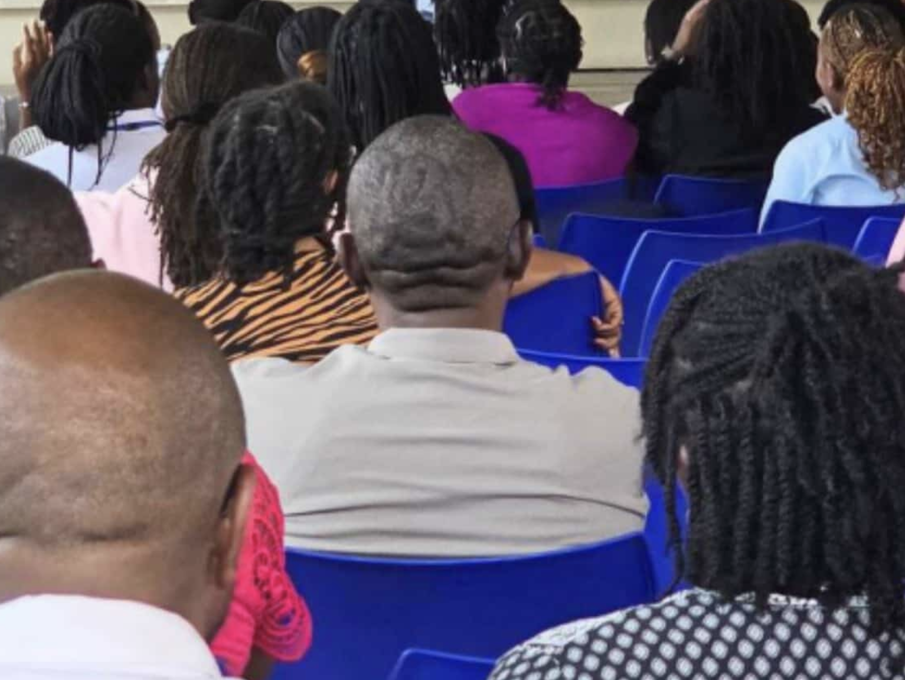
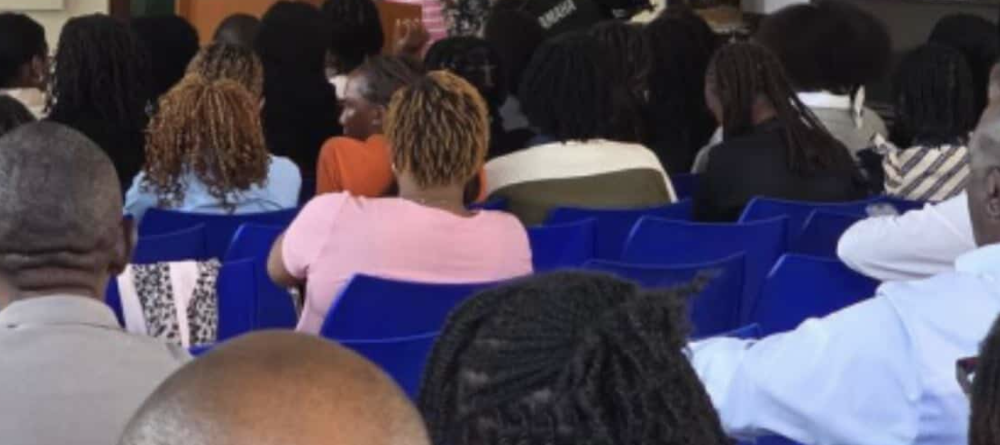
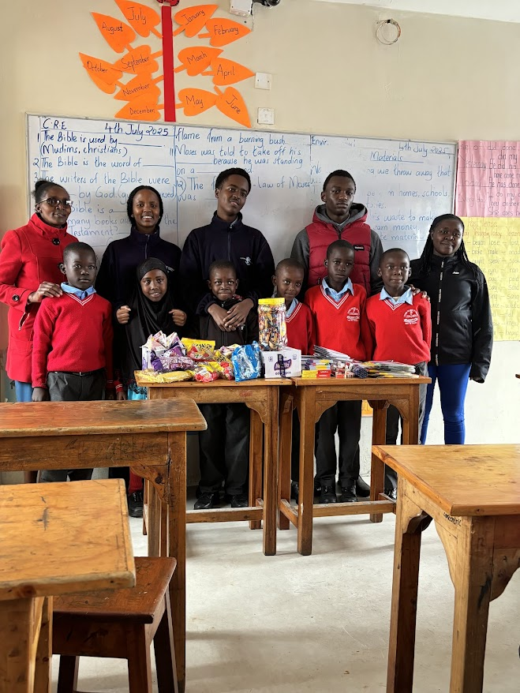
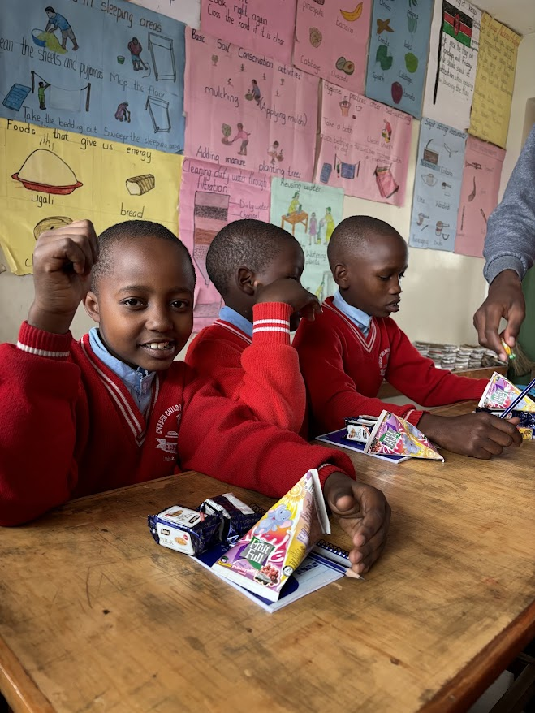
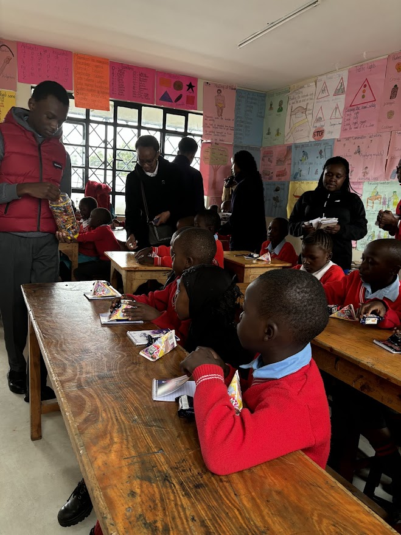
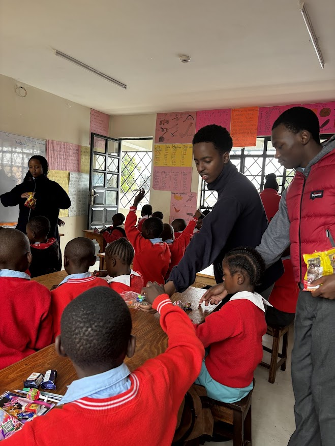
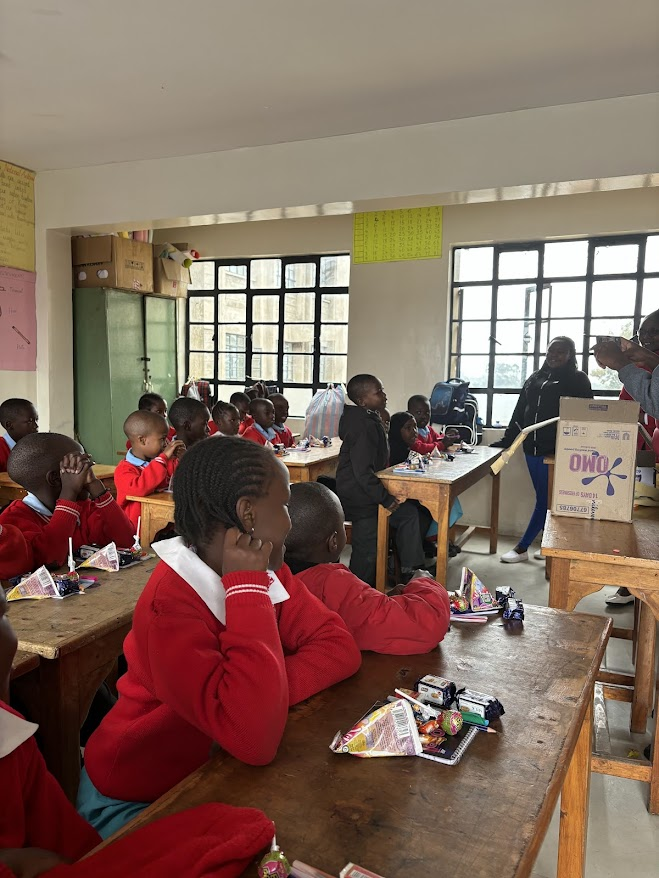
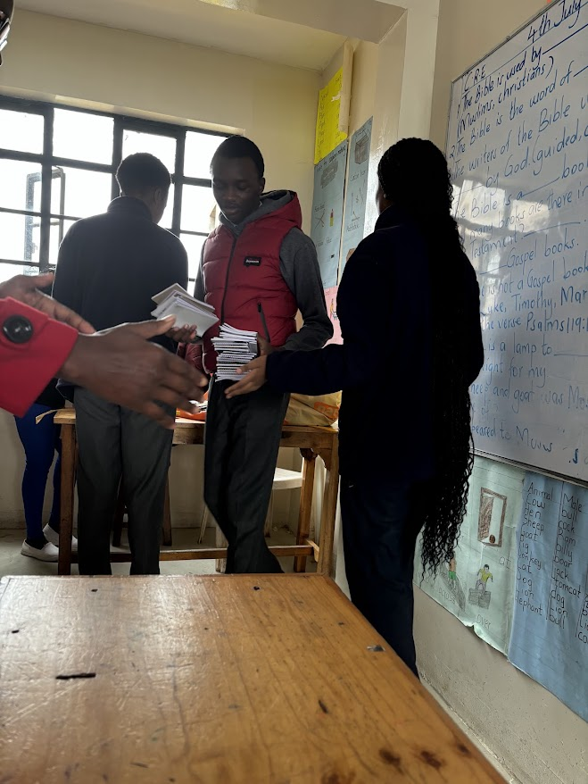

Education for All, Hope for the Future
Providing essential educational materials and books to underprivileged schools and children
Learn MoreEdussentials is a IGCSE global perspectives project committed to making quality education accessible to all children, regardless of their background or circumstances.
We believe that every child deserves access to essential educational materials and books that can open doors to a brighter future.
Team Leader
Fundraising / Events
Secretary / Fundraising
IT / Media specialist
Financing / Research
Providing essential books and learning materials to schools in need
Ensuring every child has access to quality educational resources
Empowering children to reach their full potential through education
Building partnerships with schools and communities for lasting impact
Our team had the privilege of visiting Chosen Children of Promise, where we witnessed firsthand the impact of educational support on young lives. This visit forever changed how we view education and we realised that educational imbalance is real
Conducted comprehensive research on educational needs
Visited Chosen Children of Promise as our action
Documented our findings and community feedback
Developed action plan for sustainable educational support
Around the world, numerous students face significant barriers to education. Education which is a key pillar to further opportunities and is essential to build their future.However with the lack of basic learning materials, shortages of textbooks,basic stationary, notebooks and even proper classroom resources all these factors lead to lower student engagement and poor academic performance. The lack of resources in classrooms can cause extreme distress to the students and the teachers. Without the learning materials the learners are unable to reach their fullest potential. (Maffea). Families living on less than $2 a day are merely not able to afford the cost of school.Moreover, In numerous low-income countries when tuition fees are paid families are unable to meet the costs of uniform,books and transportation preventing them from attending school. (Cross). Numerous students sharing materials is extremely common,basic supplies like pencils, chalk and slates are often shared among students. In Tanzania, only 3.5% of all sixth-grade students had sole use of a reading textbook. Although sharing materials teaches children empathy and important skills students need their own materials for sufficient learning, if multiple students share a textbook it is very likely they will be distracted and may not learn anything. (Ross)
In the country of Kenya, there are many schools which face challenges with acquiring the required resources needed to learn. Firstly, there are schools which have the resources needed to learn, but most of the time they are outdated and do not follow the current syllabus(Werk.co.ke). In other scenarios, the guardians of the student are not able to provide the money to get access to the learning resources. This causes the student to get left behind in class which leads to poor grades and eventually them getting demotivated and dropping out( elimu.ca). Lastly, lack of proper facilities such as laboratories which are not equipped with the right tools needed for learning. This leads to a decrease of how much information the student is able to learn during the lesson(Atieno article)
According to UNSD, "Global learning poverty soared to 77% in lower and middle income countries during the global pandemic" with many regions around the world, up-to-date textbooks are limited in numbers, and in Sub-Saharan Africa where 20% of children of ages 6 to 11 are not in school due to a lack of resources. 20% of primary schools globally do not have access to electricity or sanitation facilities and less than half have access to computers or internet access which has become imperative to modern learning. During the pandemic, 40% of the lowest income countries were unable to support the less fortunate learners with remote learning tools and following the return to usual schooling, 86% of learners were unable to continue structured learning due to a lack of access to the necessary classroom resources.
In South Asia and Latin America closure of schools caused a significant loss of learning in areas such as India where there was a sharp decline in learning skills with students unable to access learning resources and materials to support themselves. {Global Citizen, 2019}
In kenya, shown by a study done by population matters, kijabe children's education, UNICEF for every child fund and Daily nation shows that the urbanisation, of nairobi that has led to overcrowding, a high cost of living and a lack of infrastructure has led to a deficit of many schools being built and children across the nation losing access to education that would help in fighting a future leading to poverty. Poverty which is especially dominant in kenya as kenya has the largest slum ever recorded across the world, hidden costs of education such as expensive school uniform and registration fees makes it hard for families to send their children to school. Not only that female students are usually faced with problems outside of school such as gender based violence, additionally most girls are forced to stay at home and focus on domestic labour, finally most schools have poor learning conditions that hinder the educational process of students making it hard for students to get access to education
What we started as just a proposal turned out to be one of our team's greatest achievements. After our headteacher approved our initiative, we hosted one of the schools biggest talent shows which showcased a diverse layout of skills and performances across the stage.


The event was a massive success, running with no difficulties all throughout. We managed to raise a total of KES 12,010 that was funded through ticket sales.
Our mission, from the start, was to raise money for marginalized schools and donate school supplies towards them. We visited Chosen Children of Promise and used 100% of the funds in order to donate learning materials to the grade three students. Our initiative significantly impacted the daily lives of these learners.
Making a Difference in Young Lives

Supporting education in our community

Connecting with schools and students

Building stronger educational communities

Making a difference in children's lives

Documenting our progress and achievements

Reaching out to communities in need
See how far our message has reached
Daily visitors over the last 7 days — track how our mission is growing!
Help us spread the word! Share our mission with your friends and family.
Follow Us on InstagramJoin us in making education accessible to all children
Have questions or want to support our mission? Reach out to us.